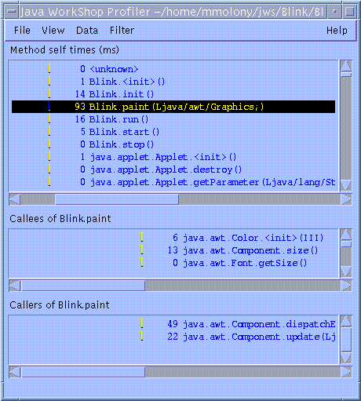

练习四：收集简要表数据
本练习将向您展示如何运行带有Java Development Environment简要表的Blink项目。简要表可以帮助您分析程序的性能， 确定程序中各方法所耗费的时间，以及每个方法被执行的次数。- 在项目管理器中检查当前项目的名字。
如果当前项目不是Blink，就双击Blink项目名。 - 通过单击Java Development Environment主工具栏中的“简要表”
 按钮来启动简要表。
按钮来启动简要表。
将显示“Applet小程序查看器”窗口。 - 最少等45秒钟再继续执行下面的步骤。
- 在applet小程序查看器中选择
Applet小程序->退出 ，结束简要表会话过程。
程序经简要化之后，“简要表”窗口将显示写入项目源代码目录的Blink.prof文件中的数据。 - 在“简要表”窗口中，选择
过滤器->无 ，显示系统类数据。 - 选择
查看->按名字排序 ，按字母顺序显示方法数据。 - 选择Blink.paint (Ljava/awt/Graphics;)方法。
- 检查简要表数据，其结果类似于下图：
这样可以提供足够数据来生成有用的简要表屏幕。

这样的结果说明：
- Java Development Environment用了93毫秒来调用Blink.paint (Ljava/awt/Graphics;)方法。
- Blink.paint (Ljava/awt/Graphics;)调用了三个方法： java.awt.Color.<init> (III)、java.awt.Component.size ()和java.awt.Font.getSize ()。
- 两个调用方法Blink.paint (Ljava/awt/Graphics;)的方法是： java.awt.Component.dispatchEventImpl (Ljava/awt/AWTEvent;)和java.awt.Component.update (Ljava/awt/Graphics;)。
 下一课：
下一课：
- 您已经完成了本教程中的所有练习。下一个教程是教程二：编辑项目属性。